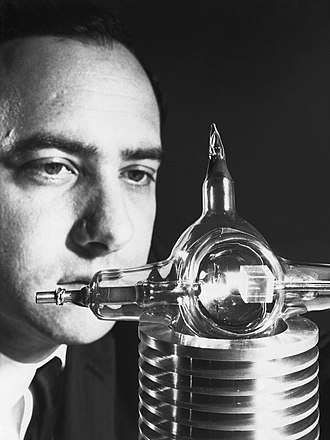

Date personale
Theodore Harold " Ted " Maiman (11 iulie 1927 - 5 mai 2007) a fost un inginer și fizician american care este creditat pe larg cu invenția laserului . Laserul lui Maiman a dus la dezvoltarea ulterioară a multor alte tipuri de lasere. Laserul a fost tras cu succes la 16 mai 1960. Într-o conferință de presă din 7 iulie 1960, la Manhattan, Maiman și angajatorul său, Hughes Aircraft Company , au anunțat laserul lumii. Maiman a primit un brevet pentru invenția sa și a primit numeroase premii și onoruri pentru munca sa. Experiențele lui Maiman în dezvoltarea primului laser și a evenimentelor conexe ulterioare sunt descrise în cartea sa, Odiseea laserului .
Copilăria
Maiman s-a născut în Los Angeles, California, din părinți, Abraham "Abe" Maiman, un inginer electric și inventator, și Rose Abramson. La o vârstă fragedă, familia sa s-a mutat la Denver , Colorado , unde și-a ajutat tatăl cu experimentarea într-un laborator de electronică . În adolescență, Maiman a câștigat bani prin repararea aparatelor electrice și radiourilor , și după ce a părăsit liceul a fost angajat ca inginer junior la Compania Națională de Radio la 17 ani.
Maiman a murit din cauza mastocitozei sistemice la 5 mai 2007 la Vancouver , Columbia Britanică , Canada, unde locuia împreună cu soția sa, Kathleen.

Maiman with his laser in July 1960.